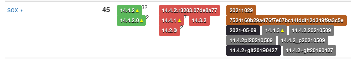

sox_ng wiki - Statistics
This is map of the version numbers used for SoX in 45 distinct package versions. 
Code analysis has not completed
This Code Location is flagged as Do Not Fetch
Analysis is stalled for the following reasons:
Sources marked with a red exclamation are disabled for multiple failures.
Please reach out to us for further assistance.